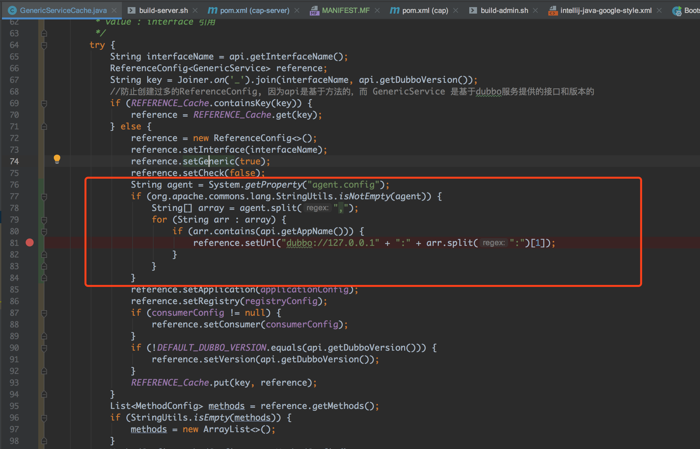
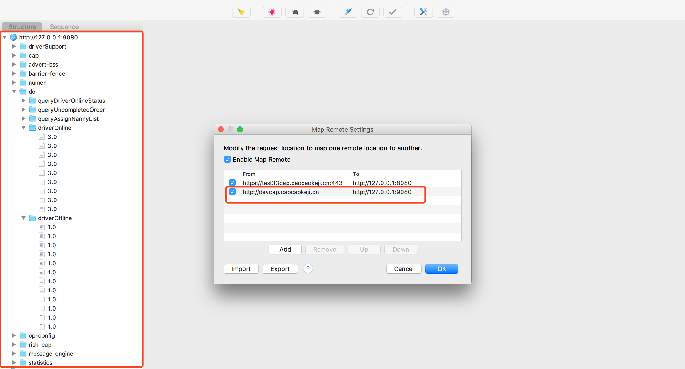
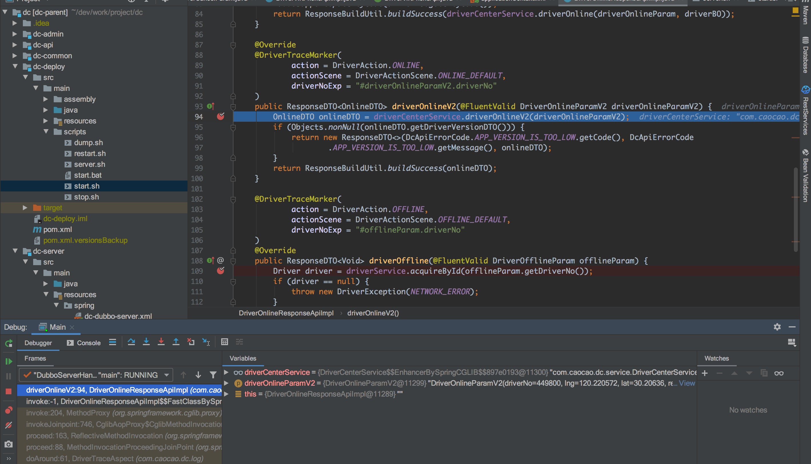
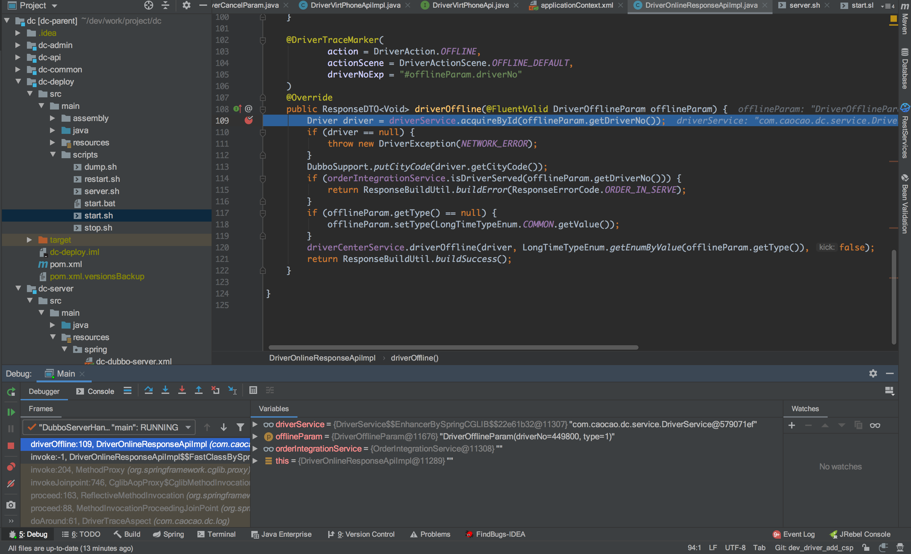

目前客户端、H5调用服务端接口都经过CAP网关，CAP再通过RPC调用服务端接口，完成前后端接口调用。开发环境中除了可以通过自测用例、dubbo invoke调试接口，是否还可以通过Charles抓包，利用Map Remote重定向到CAP，然后CAP再调用我们的本地服务，只需要在客户端上操作，就可以调试接口，理论上是可行的。下面是调用链路示意图：
[http] [rpc]
CLIENT 《===》 CAP 《===》 SERVER
由于是跨协议调用，Charles不能直接完成对SERVER调用，必须经过CAP，CAP不再多述，具体参考中间件文档: CAP文档。即Charles可以通过Map Remote重顶向到CAP，CAP需要完成对本地服务的调用，下面具体说明。
HTTP服务
CAP所对应的服务是cap-server，cap-server在启动时，会通过Netty启动一个HTTP服务，用于监听HTTP请求，具体参考CAP代码:com.caocao.cap.container.handler.HttpServerInboundHandler#channelRead0。
构建GenericService
cap-server启动时会获取zk节点/cap/cache/api下的所有数据用于构建com.alibaba.dubbo.config.ReferenceConfig<GenericService>，并放入缓存，泛化调用时再从缓存中获取配置，为了实时刷新本地缓存，也会注册Listener用户监听节点变化完成本地缓存的更新，具体可参考:com.caocao.cap.server.cache.ApiCache#init。
修改GenericService配置
Dubbo提供了服务直接调用的功能，即消费端可绕过注册中心，直接对服务提供者调用，所以在构建com.alibaba.dubbo.config.ReferenceConfig<GenericService>时，指定服务提供者信息:

在启动参数中加入
-Dagent.config=dc:6666,numen:8888配置，指定服务名，以及本地dubbo暴露端口，可以根据具体需要指定多个本地服务，并打包成jar，为了方便使用。
调试结果
配置Charles:
CAP开发环境暴露HTTP端口为9080

启动CAP、dc:
➜ Desktop java -jar -Dagent.config=dc:6666,numen:8888 /Users/lioswong/Desktop/cap-agent.jar
Server startup done.
APP上点击上下线:


已经进入断点了，可以愉快的本地调试CAP接口了。
说明
- 可以本地调试测试环境接口么？由于测试环境的网络与本地不通，暂不可行。
- 可以通过Charles抓包调试接口做些什么?抓包、断点、修改请求及相应信息、模拟弱网、重复请求接口等等
- 让本地调试CAP接口成为可能
- CAP服务稳定，打包的cap-agent.jar可一直使用，公司wiki上已上传